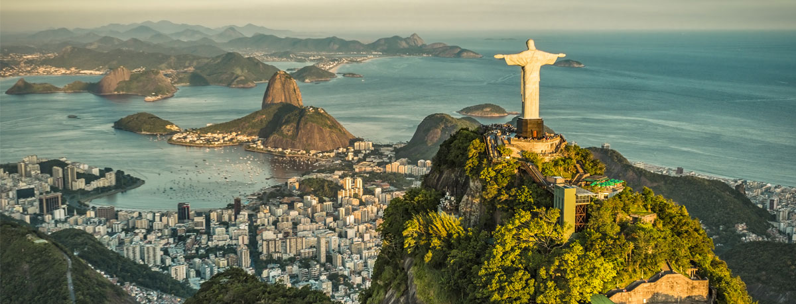

Over Rio de Janeiro
Rio de Janeiro is een van de bekendste steden ter wereld, beroemd om zijn iconische stranden, het Christusbeeld en het jaarlijkse carnaval. De stad biedt een unieke mix van natuur, cultuur en ontspanning, wat het een must-visit maakt voor toeristen.
Bezienswaardigheden
Rio is beroemd om zijn prachtige bezienswaardigheden die zowel natuurlijke als culturele schoonheid combineren.
- Cristo Redentor (Christusbeeld): Het iconische Christusbeeld op de Corcovadoberg is een van de zeven nieuwe wonderen van de wereld.
- Sugarloaf Mountain (Pão de Açúcar): Geniet van een adembenemend uitzicht over de stad vanaf deze beroemde bergtop.
- Copacabana en Ipanema: De beroemde stranden van Rio de Janeiro, waar je kunt relaxen en genieten van het tropische weer.
- Maracanã Stadion: Een van de grootste en beroemdste stadions ter wereld, bekend vanwege het wereldkampioenschap voetbal en de Olympische Spelen van 2016.
Activiteiten
Rio biedt tal van activiteiten voor alle soorten reizigers, van natuur- en cultuurliefhebbers tot feestgangers.
- Carnaval: Rio’s jaarlijkse carnaval is de grootste en bekendste ter wereld, met parades, muziek, en dans.
- Strandactiviteiten: Geniet van het zonnen, surfen of beachvolleyballen op de beroemde stranden van Copacabana en Ipanema.
- Wandeltochten: Trek door de Tijuca-regenwouden en ontdek de natuurlijke schoonheid van Rio de Janeiro.
Geschiedenis van Rio de Janeiro
Rio de Janeiro was de hoofdstad van Brazilië van 1763 tot 1960 en is nog steeds een van de belangrijkste culturele en toeristische steden van het land. De stad heeft een rijke geschiedenis, van het koloniale tijdperk tot de moderne tijd.
Klimaat
Rio de Janeiro heeft een tropisch klimaat met hete zomers en milde winters. De temperaturen liggen doorgaans tussen de 23°C en 30°C.